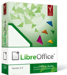
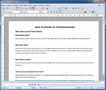
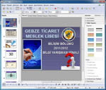

LibreOffice
,LibreOffice, The Document Foundation tarafından geliştirilen pek çok platformda çalışan ve diğer ofis programlarıyla uyumlu, özgür ve ücretsiz bir ofis yazılımıdır. LibreOffice adındaki Libre sözcüğünden de anlaşılacağı gibi (İspanyolca ve Fransızca'da özgür demektir) bir özgür yazılım ürünüdür.
LibreOffice, bir ofis yazılımı olmanın ötesinde sunduğu bileşenlerle, tam anlamıyla bir kişisel üretkenlik takımıdır. LibreOffice’in size sunduğu; Writer(Kelime İşlemci), Calc(Hesap Tablosu), Impress(Sunum), Draw(Çizim), Math(Matematik) ve Base(Veritabanı) uygulamalarının zengin özellikleriyle, bütün belge oluşturma ve veri işleme ihtiyaçlarınızı karşılayabilirsiniz.
LibreOffice ücretsiz olarak indirip bilgisayarınıza kurabileceğiniz profesyonel kalitede kapsamlı bir üretim takımıdır. LibreOffice Microsoft Windows, Mac OS X ve Linux(Pardus, Debian, Ubuntu, Fedora, Suse vb) bütün büyük işletim sistemlerinde kullanılabilir ve 30 farklı dili destekler.LibreOffice’i telif hakkı ihlali korkunuz olmadan özgürce indirebilir, kurabilir ve dağıtabilirsiniz. İndirmek için tıklayınız.
LibreOfffice Size Ne Sunuyor?
- Writer(Kelime İşlemci)
- Calc(Hesap Tablosu)
- Impress(Sunum)
- Draw(Çizim)
- Base(Veritabanı)
- Math(Formül Düzenleyici)
| Writer (Kelime İşlemci) | Calc (Hesap Tablosu) | Impress (Sunum) |
|  |  |
 |
{kind=link}
{kind=link}